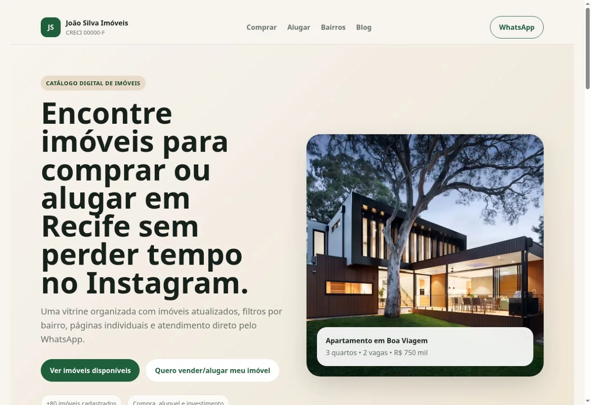
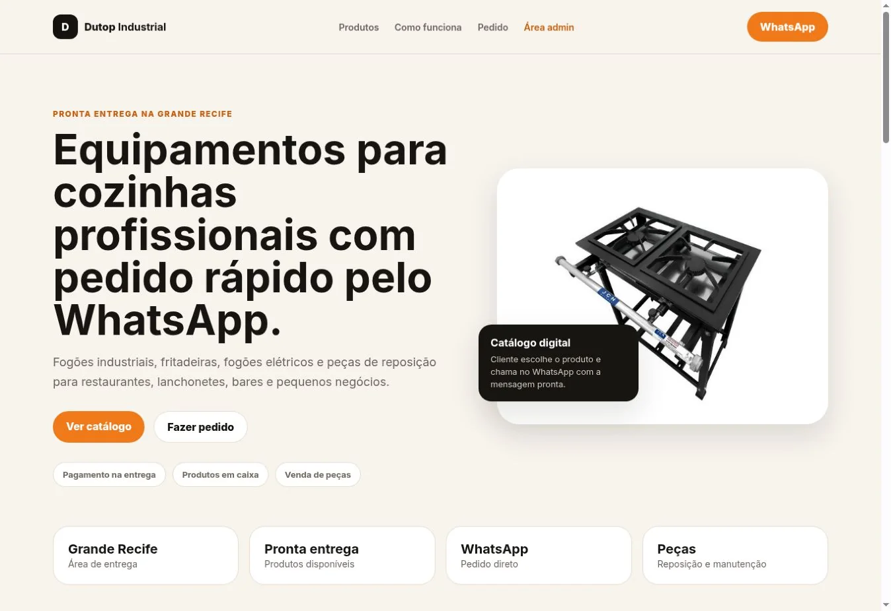

Linha Verde Spas & Piscinas
Presença digital integrada para apresentar piscinas e spas, apoiar campanhas e transformar interesse em contato comercial.
Conheça entregas publicadas e modelos estratégicos criados para negócios locais. Cada projeto conecta posicionamento, experiência, SEO e conversão.
Sites reais, ativos e acessíveis em uma nova aba.
Presença digital integrada para apresentar piscinas e spas, apoiar campanhas e transformar interesse em contato comercial.
Portfólio digital criado para valorizar o estilo do artista, fortalecer confiança e facilitar pedidos de orçamento.
Site profissional para apresentar vistorias e laudos, explicar os serviços e preparar solicitações de atendimento pelo WhatsApp.
Soluções completas desenvolvidas para representar segmentos estratégicos.

Ver demonstraçãoModelo premium para apresentar imóveis, captar compradores e abrir um canal específico para proprietários.

Ver demonstraçãoDemonstração de catálogo de equipamentos com categorias, produtos e preparação de pedidos pelo WhatsApp.
Começamos pelo diagnóstico do negócio, da concorrência e das oportunidades mais importantes.
Solicitar diagnóstico ↗